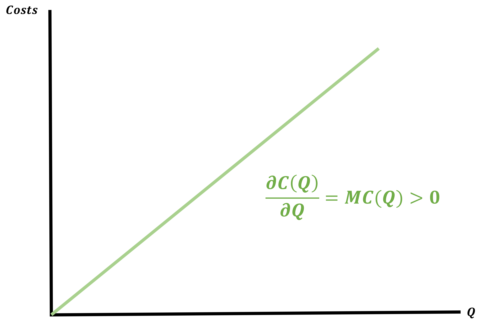
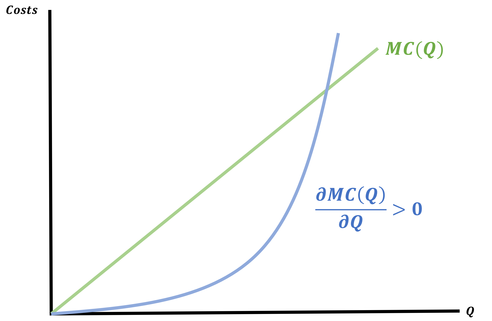
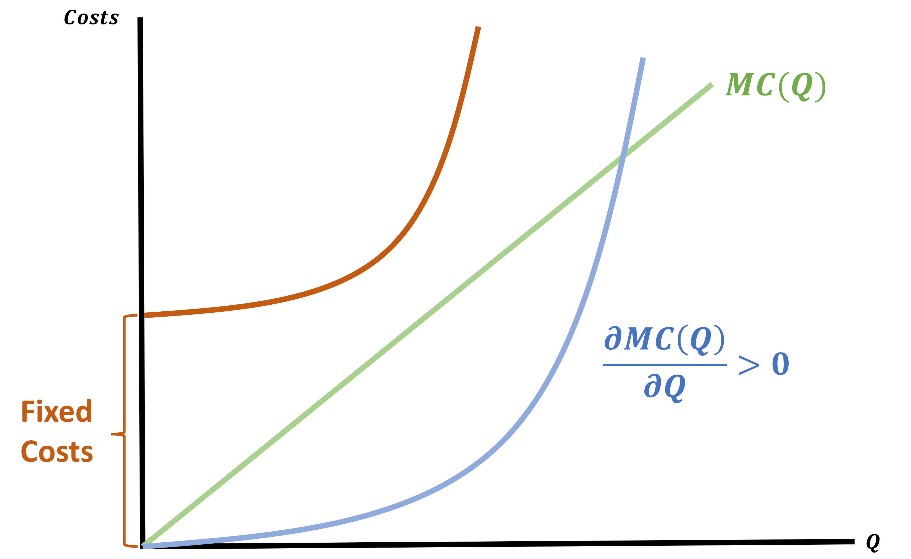
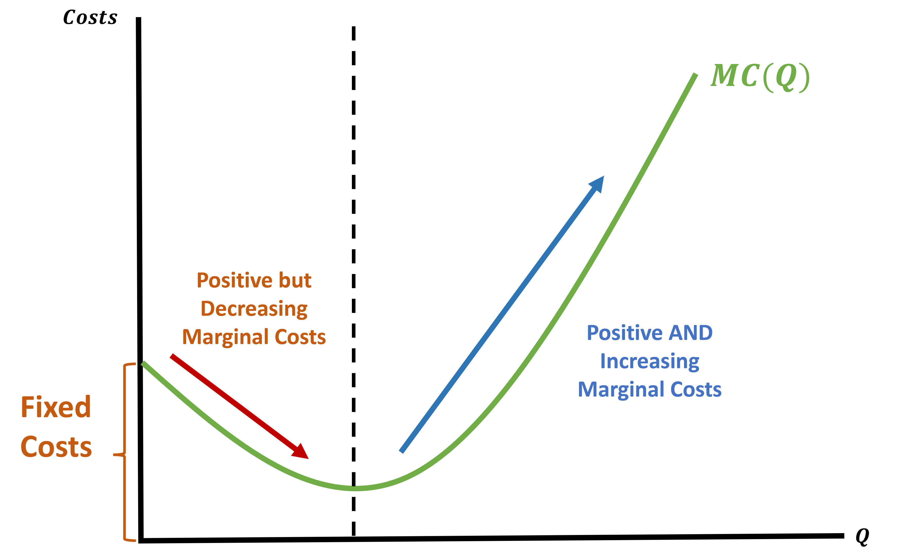

What The Hell Is A Cost Function?
Our goal for the second half of the class is to minimize costs.
We will do this by deriving a minimzed cost function but what even is it?
Let’s begin by introducing some useful notation:
- The minimized cost function will be \(C^{*}(Q)\)
- This function tells us that for any given quantity \((Q)\), \(C^{*}(Q)\) represents the cheapest way possible to produce \(Q\)
. . .
We will leverage this information:
Knowing \(C^{*}(Q)\) means that we do not have to solve the cost minimization problem to figure out how much it will cost you to produce a target quantity
Cost Functions
The general formula for a cost function is:
\[ C^{*}(Q) = wL^{*}(Q) + rK^{*}(Q) \]
To find this we will
- Find the MRST and set it equal to the price ratio
- Plug into our Q constraint and find a \(L^{*}\) and \(K^{*}\) in terms of \(Q\)
- Find the cost of the optimal \(L^{*}\) and \(K^{*}\)
. . .
Last lecture we found levels of \(L^{*}\) and \(K^{*}\) when we knew \(Q\). Now we will keep \(Q\) as a variable so we can find costs for any possible quantity.
Cost Function Example - Step 1
Let’s say we are faced with the following problem:
\[ \min 10L + 10K \;\;\;\; s.t. \;\;\;\; \bar{Q} = f(L,K) = L^{1/4}K^{1/4} \]
We begin by finding the MRTS and set it equal to the Price Ratio
. . .
MRTS
\[\begin{align*} \text{MRTS} &= \frac{MU_{L}}{MU_{K}} \\ &= \frac{1/4 \cdot L^{-3/4}K^{1/4}}{1/4 \cdot L^{1/4}K^{-3/4}} \\ &= \frac{K^{1/4}K^{3/4}}{L^{1/4}L^{3/4}} = \frac{K}{L} \\ \\ \end{align*}\]
Price Ratio
\[\begin{align*} \frac{w}{r} = \frac{10}{10} = 1 \end{align*}\]
Set Them Equal
\[\begin{align*} \frac{K}{L} = 1 \rightarrow K = L \end{align*}\]
Wheel link in question
Cost Function Example - Step 2
\[ K = L \;\;\;\; \text{recall:} \;\; \bar{Q} = f(L,K) = L^{1/4}K^{1/4} \]
We found our Optimality Condition for \(K\) and \(L\)
Plug into Q-Constraint to find \(\; L^{*}(Q) \;\) and \(\; K^{*}(Q) \;\)
. . .
Q-Constraint
\[\begin{align*} Q &= F(L,K) = L^{1/4}\color{red}{K^{1/4}} \\ Q &= L^{1/4}\color{red}{L^{1/4}} = L^{1/2} \\ Q &= L^{1/2} \\ \end{align*}\]
Solve for \(\; L^{*}(Q) \;\) and \(\; K^{*}(Q)\)
\[\begin{align*} L^{1/2} &= Q \\ (L^{1/2})^{\color{red}{2}} &= Q^{\color{red}{2}} \\ L^{*} &= Q^{2} \\ K^{*} &= Q^{2} \end{align*}\]
Cost Function Example - Step 3
\[ L^{*} = Q^{2} \;\;\; \& \;\;\; K^{*} = Q^{2} \;\;\;\; \text{recall:} \; C(Q) = 10L + 10K \]
We found our optimal Labor and Capital choices are in terms of \(Q\)
Find \(\; C^{*}(Q) \;\) using \(\; L^{*} \;\) and \(\; K^{*}\)
. . .
\[\begin{align*} C^{*}(Q) &= 10 \cdot \color{red}{L^{*}(Q)} + 10 \cdot \color{red}{K^{*}(Q)} \\ C^{*}(Q) &= 10 \cdot \color{red}{Q^{2}} + 10 \cdot \color{red}{Q^{2}} \\ C^{*}(Q) &= 20 \cdot Q^{2} \end{align*}\]
Why Bother With Cost Functions?
With the Cost Minimization problem, we took our level of production, \(Q\), as given and tried to figure out the most efficient combo of inputs to meet our quota.
- But assuming we’ve already figured out the best way to hit any quota, now we can think about what scale of production to target
- Our investors just care that we can figure out how much it will cost to hit our market demand
- We will introduce profits later
- This decision is where Supply will come from
. . .
But before we can get into Profit Maximization, we will dive deeper into understanding cost functions
Understanding Cost Functions
Knowing what is considered as costs in economics helps us with the theory part of production
- It will play a larger role when we deal with profit maximization
. . .
For now, we can figure out how we expect cost functions to behave:
Assume a generic cost function such that \(C = F(Q)\)
When \(Q\) increases what do we expect to happen to \(C\)?
- They should INCREASE
It usually costs more to make more goods
This means that the first derivative \((C'(Q))\) should be?
- Positive \(\; \rightarrow C'(Q) > 0\)
Derivative of \(C(Q)\)
The derivative of \(C(Q)\) is very important
So much so that we give it a name: Marginal Cost (MC)

Marginal Costs
We will add an additional assumption to make our lives easier
Assume that firms production functions exhibit decreasing returns
- This has a direct implication on our Marginal Cost curve
- \(MC(Q)\) will increase as \(Q\) increases
- It becomes more expensive to make an additional unit as you make more and more
- So Decreasing Returns to Scale (DRS) = Increasing Marginal Costs
Marginal Cost Curves

Cost of Producing Nothing?
Does it actually cost nothing to make nothing?
We will assume that there exists some form of overhead or fixed costs associated with producing goods
- A business pays rent on their warehouse no matter how empty or full it is
- A restaurant has to purchase a license in order to serve food/alcohol
. . .

How Realistic are Cost Functions?
A good thinker is initially skeptical. So let’s cast some doubt on our Increasing Marginal Cost assumption
Isn’t producing in bulk sometimes much easier than producing small quantities?
- The existence of Costco tells us yes
. . .
So this is true, but only up to a point
- We are perfectly comforable modeling firms that initially experience decreasing marginal costs but at a high-enough quantity produced, they must experience increasing marginal costs
Initial Decreasing Marginal Costs with Increasing Marginal Costs At High Quantity

Total Cost
Up to now we have expressed firm’s costs as
\[ TC(Q) = w \cdot L^{*}(Q) + r \cdot K^{*}(Q) \]
Which let’s us know the cheapest way to produce a given target \(Q\)
. . .
We can also express costs as a function of quantity
\[ TC(Q) = f(Q) + F \]
Where \(F\) is a non-negative constant
We will split these costs up by type (i.e. More Cost Functions!)
Decomposing Costs
Costs will fall into one of two categories:
Fixed Costs
Costs that are paid even if the firm produces nothing \(\rightarrow C(0)\)
Variable Costs
Costs that are increasing in the quantity produced (e.g. materials and labor used to produce each unit)
. . .
In its simplest form, total cost can be written as
\[ \text{Total Cost} = \text{Variable Costs} + \text{Fixed Costs} \]
Decomposing Costs Example
Consider the costs faced by Forever 21:
- Suppose have to pay Valley River Mall $ 12 million for a fixed 10-year lease
- To sell clothes they also need to purchase from the distributor, hire workers, keep lights on, etc.
How can we catogorize the different costs?
- the lease is a fixed cost that F21 has to treat as a sunk cost in the short-run
- everything else is variable; it depends on how many clothes they want to sell
Fixed and Variable Costs Example as Table
| Q | Fixed Cost | Variable Cost | Total Cost | Marginal Cost \((\Delta C | \Delta Q = 1)\) |
|---|---|---|---|---|
| 0 | 12 | 0 | 12 | - |
| 1 | 12 | 1.33 | 13.33 | 1.33 |
| 2 | 12 | 2.67 | 14.67 | 1.33 |
| 3 | 12 | 6 | 18 | 3.33 |
| 4 | 12 | 13.33 | 25.33 | 7.33 |
| 5 | 12 | 26.67 | 38.67 | 13.33 |
Fixed vs Variable cost example as graph
Fixed and Variable Costs Example as Table
| Q | Fixed Cost | Variable Cost | Total Cost | Marginal Cost \(\frac{\delta C}{\delta Q}\) |
|---|---|---|---|---|
| 0 | 12 | 0 | 12 | 2 |
| 1 | 12 | 1.33 | 13.33 | 1 |
| 2 | 12 | 2.67 | 14.67 | 2 |
| 3 | 12 | 6 | 18 | 5 |
| 4 | 12 | 13.33 | 25.33 | 10 |
| 5 | 12 | 26.67 | 38.67 | 17 |
Fixed Costs (FC)
These are costs the firm has to pay even if it produces 0 units of output
- Also known as the intercept of the Cost Function
\[ FC = TC(0) = f(0) + F = F \]
. . .
We can find these by setting \(Q = 0\)
. . .
Find the Fixed Costs for the following Cost Function
\[ C(Q) = Q^{2} + 10 \]
. . .
\[ C(0) = 0^{2} + 10 = 10 \]
Variable Costs (VC)
These are the increasing costs that the firm pays for every unit of quantity produced
- These are costs of producing \(Q\), when we ignore all Fixed Costs
\[\begin{align*} TC(Q) &= VC + FC \\ VC &= TC(Q) - FC \end{align*}\]
. . .
Find the Variable Costs for the following Cost Function
\[ C(Q) = Q^{2} + 10 \]
. . .
\[ VC = Q^{2} \]
Decomposing Costs
It is always the case that
\[ C(Q) = VC(Q) + FC \]
Costs will always be the sum of the variable costs and the fixed cost
. . .
Let’s practice:
Decompose the following Cost Function into FC, VC, and MC
\[ C(Q) = \frac{1}{3} Q^{3} - Q^{2} + 2Q + 12 \]
. . .
\[\begin{align*} FC &= 12 \\ VC &= \frac{1}{3} Q^{3} - Q^{2} + 2Q \\ MC &= Q^{2} - 2Q + 2 \end{align*}\]